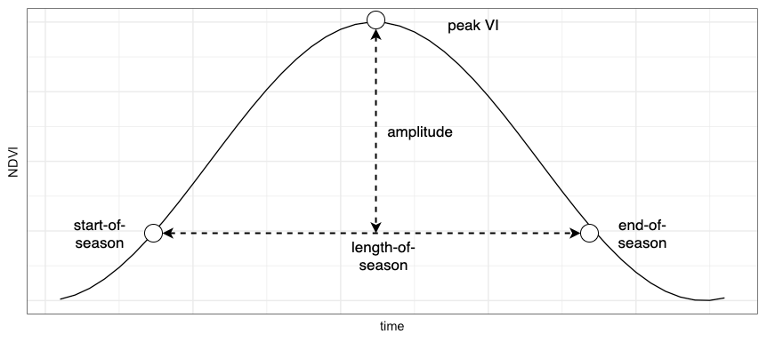
Introduction
Phenology
Phenology refers to timing of biological events, phenomena, or life cycle phases, which are often driven by climatic and environmental factors. For example, budbreak or the onset and duration of flowering of plants are phenological events.
As remote sensors capture repeat observations of the same location over time, it is possible to track the dynamics of vegetation growth and the occurrence of phenological events.
The ability to monitor phenology can help us understand: how year-to-year variation in weather (e.g. extreme heat events or drought) affects vegetation growth (e.g. crop yields); how ecosystems are responding to changing climates (e.g. changing timing and duration of growing seasons); and how human modification of landscapes affects vegetation dynamics (e.g. differences in observed phenology in urban areas versus proximal natural or rural areas).
Remote Sensing of Phenology
Spectral vegetation indices, mathematical combinations of surface reflectance in visible and near infrared wavelengths, capture various aspects of vegetation condition at the time of image capture. These vegetation indices (VI) are used to monitor vegetation dynamics, and, thus, phenology.
Would you expect the phenology profiles to differ for evergreen and deciduous forests?
Yes, a deciduous forest’s phenology profile would have a more exaggerated hump-shape with a distinct start-of-growing season, greenup to peak greenness, and then a senescence to leaf off. An evergreen forest would have a less exaggerated greenup and senescence and would maintain higher VI values in winter.
Due to the coarse spatial resolution of remote sensing data, relative to plants, it is challenging to directly observe specific phenology events such as flowering or leaf out. Often, remotely sensed data is used to indirectly estimate the timing of phenology events or to compute metrics that characterise the stages and nature of vegetation growth. These metrics are referred to as land surface phenology metrics (Zeng et al., 2020) or seasonal parameters (Jönsson and Eklundh, 2004).
Phenology metrics are computed from time-series of vegetation index values and are used to characterise the phenology at a location and for a given year. Common phenology metrics include start-of-season, end-of-season, length-of-season, time-of-peak-VI, peak VI, amplitude, area under the curve, and rates of greenup and senescence. Peak VI and area under the curve are often used as indicators of biomass.
Time-series of vegetation index values are used as inputs to functions which contain rules for computing phenology metrics. For example, peak VI can be estimated by applying the max() function to a subset of vegetation index values between start-of and end-of-season. Start-of-season can be estimated by a search of vegetation index values for exceedance of a threshold value or the detection of a valley point in vegetation index time-series. Rate-of-greenup can be estimated by the slope between start-of-season and peak VI.
What are advantages of using satellite remote sensing over field-based monitoring of phenology?
- Spatial coverage - it is easier to monitor vegetation and ecosystem dynamics at spatial extents not possible to cover by field-based observations.
- Temporal coverage - it is costly to make repeat observations over time using field-based or in-situ methods. Satellite remote sensing provides an affordable way to monitor the same location within-seasons and over many years.
What are advantages of using in-situ or field-based methods to monitor phenology?
- Monitor the phenology of specific species or plants.
- Monitor specific phenological events which are hard to detect with satellites at coarse and moderate resolutions such as flowering or budding.
Urban Park Phenology
In this lab you will monitor the phenology over an urban park in Perth and you will be working with Sentinel-2 satellite images. Sentinel-2 data is a European Space Agency product with a 5-day temporal resolution and a 10 m spatial resolution. You will:
- Subset Sentinel-2 images for 2020.
- Mask out cloudy pixels.
- Transform the Sentinel-2 multispectral images into NDVI images.
- Fill gaps caused by cloudy pixels in NDVI time-series.
- Use a smoothing algorithm to remove remnant noise in NDVI time-series.
- Estimate start-of-season and length-of-season for park vegetation.
- Explore relationships between phenology metrics and climate variables.
To complete these tasks you will use various data transformation and visualisation functions that have been introduced in previous labs.
Setup
Add a header to the start of your script.
/*
Lab 8
Author: Test
Date: XX-XX-XXXX
*/Next we need to import a module that provides functions for time-series and phenology analysis.
// module with functions for phenology analysis
var phenology = require('users/jmad1v07/Phenology:phenology.js');We also need to specify our study area. Here, we’ll be working in a section of Kings Park.
var geometry = ee.Geometry.Polygon(
[[[115.83102144426752, -31.95262028223891],
[115.83102144426752, -31.956297928621538],
[115.83679355806761, -31.956297928621538],
[115.83679355806761, -31.95262028223891]]]);
// centre the map on the study area
Map.centerObject(geometry, 16);
// create an empty image into which to paint the features, cast to byte.
var empty = ee.Image().byte();
// study area outline
var outline = empty.paint({
featureCollection: geometry,
color: 1,
width: 3
});
Map.addLayer(outline, {palette: '000000'}, 'study area');Data Preprocessing
Before we can use Sentinel-2 surface reflectance data for phenology analysis, it needs to go through several data transformation and preprocessing steps. These include:
- filter operations to subset the Sentinel-2
ImageCollectionto the time-period and study area of interest. This requires implementing a non-spatial filter usingImagemetadata (date ofImagecapture) and spatial filtering based on theImagefootprint intersecting the study area. - creating a new variable using local operations that are applied at the pixel level to combine bands representing red and near infrared reflectance into a normalised difference vegetation index (NDVI) band.
- filter and local operations to compare
Imagebands to a cloud mask and mask out pixels where cloud was detected.
To implement data preprocessing, we will need two functions. One function to generate per-Image cloud masks and another function to compute the NDVI.
// function to mask clouds in Sentinel 2 images
function maskS2Clouds(image) {
var qa = image.select('QA60');
var cloudBitMask = 1 << 10;
var cirrusBitMask = 1 << 11;
var mask = qa.bitwiseAnd(cloudBitMask).eq(0).and(
qa.bitwiseAnd(cirrusBitMask).eq(0));
return image.updateMask(mask).divide(10000)
.select("B.*")
.copyProperties(image, ["system:time_start"]);
}
// function that adds an NDVI band per-image
function addNDVIAndClip(image) {
var ndvi = image.normalizedDifference(['B8', 'B4']).rename('ndvi');
image = image.addBands(ndvi);
return image.clip(geometry);
}Finally, import the Sentinel-2 surface reflectance ImageCollection and chain together the various data preprocessing operations.
// import Sentinel 2 ImageCollection, cloud mask, and add NDVI band
var s2 = ee.ImageCollection("COPERNICUS/S2_SR");
var startDate = ee.Date('2020-01-01');
var endDate = ee.Date('2021-03-01');
var s2Ndvi = s2
.filter(ee.Filter.date(startDate, endDate))
.filter(ee.Filter.lt('CLOUDY_PIXEL_PERCENTAGE', 30))
.filter(ee.Filter.bounds(geometry))
.map(maskS2Clouds)
.map(addNDVIAndClip)
.select('ndvi');Print the s2Ndvi ImageCollection to the console to check that it stores Sentinel-2 Images with an ndvi band.
print('Check the 2020 S2 NDVI collection:', s2Ndvi);Why is it important to remove clouds from remote sensing images before computing phenology metrics?
If cloudy observations remain in VI time-series it will create short-run variation in greenness which could be mistaken for phenological events or bias estimates of phenological events.
Noise Removal and Gap Filling
Let’s explore the NDVI time-series in the study area. Run the following code to load an interactive chart generator; click on a location within the study area on the map and an NDVI time-series chart will be rendered in the Console.
// draw NDVI time series chart at clicked points
var drawChart = function(point) {
var clickedPoint = ee.Geometry.Point(point.lon, point.lat);
var tsChart = phenology.timeSeriesChart(clickedPoint, s2Ndvi.select(['ndvi']), 'NDVI', 'time', 'NDVI', 10, 'system:time_start');
print(tsChart);
};
Map.add(ui.Label('Click anywhere within study area - NDVI time-series will appear in Console...'));
Map.onClick(drawChart);As you click and render time-series charts of vegetation growth there are a couple of things to look out for. First, the seasonal profile of vegetation growth with greenup beginning in late austral summer and peak greenness in austral winter should be apparent. Second, it is likely that you will see short-run variation in NDVI values that are superimposed on the dominant seasonal profile. There could also be some gaps in the time-series which correspond to cases where the cloud mask was applied. This short-run variation in NDVI values could be noise and is not caused by actual changes in vegetation condition. The source of this noise could be clouds missed by the cloud mask, other sources of atmospheric contamination, or changes in illumination. Vegetation growth is typically characterised by smooth, continuous, and sustained increases and then decreases in greenness. Functions to detect phenology metrics look for transitions from increasing to decreasing vegetation growth, or vice versa, or rates of increase or decrease in vegetation growth over time. This noise in NDVI time-series could confound detection of phenology parameters; thus, NDVI time-series are filtered to remove anomalous values.
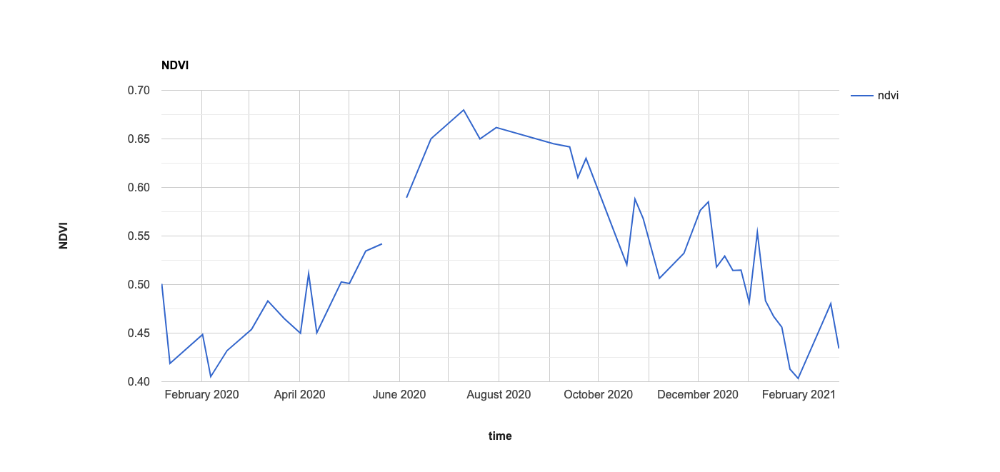
Let’s apply a function to our NDVI time-series to remove any anomalously high or low NDVI values. The approach we’ll use here is based on Kong et al. (2021) and defines a noisy spike or low NDVI value as cases where the difference between a data point and the NDVI values of its temporal neighbours is greater than one and a half times the standard deviation of the entire NDVI time-series.
We can use the removeSpikes() function from the phenology module to filter out anomalous NDVI values. The removeSpikes() function expects to receive as arguments:
- An
ImageCollectionof VI values. - A number that defines the window size of temporal neighbours for each data point.
- The band name.
- The number of standard deviations that defines a noisy value.
- The time property for each
Imagein the collection.
// add a timestamp band for each image
var s2NdviTs = s2Ndvi.map(phenology.addTimeBand('system:time_start', 'timestamp'));
// remove spikes and drop outs
// there can be noisy pixel values that are missed by cloud masks
// these noisy pixel values can affect representations of vegetation growth profiles and phenology
// remove noisy pixel values - anomolous values
var s2RemovedSpikes = phenology.removeSpikes(s2NdviTs, 15, 'ndvi', 1.5, 'system:time_start');We can explore the result of removing anomalous NDVI values from our time-series. Run the following code snippet and click on the map to generate charts of NDVI time-series with spikes removed.
// Removed spikes NDVI chart
var drawChart = function(point) {
var clickedPoint = ee.Geometry.Point(point.lon, point.lat);
var tsChart = phenology.timeSeriesChart(clickedPoint, s2RemovedSpikes.select(['ndvi']), 'NDVI - removed spikes', 'time', 'NDVI', 10, 'system:time_start');
print(tsChart);
};
Map.onClick(drawChart);Through cloud masking and filtering anomalous NDVI values we have removed some of the noise from our time-series. However, now there are gaps in the time-series which is problematic when using these time-series to represent profiles of vegetation growth. To fill in the gaps in the NDVI time-series, we can use the gapFill() function from the phenology module. This function takes in as arguments:
- An
ImageCollectionwhere masked pixels in its constituent images will be filled with sensible VI values. - A number specifying a date range to search for neighbouring images for each data point in the time-series. The valid VI values of these neighbouring images will be used to interpolate and fill the missing VI values.
- The time property for each
Imagein the collection. - The name of the timestamp band in each
Image.
Gap fill the NDVI ImageCollection and explore the results of gap filling by rendering charts in the Console.
// gap fill cloudy pixels using average of nearest cloud free before and after images
var s2GapFilled = phenology.gapFill(s2RemovedSpikes, 30, 'system:time_start', 'timestamp');
// gap filled NDVI chart
var drawChart = function(point) {
var clickedPoint = ee.Geometry.Point(point.lon, point.lat);
var tsChart = phenology.timeSeriesChart(clickedPoint, s2GapFilled.select(['ndvi']), 'NDVI - gap filled', 'time', 'NDVI', 10, 'system:time_start');
print(tsChart);
};
Map.onClick(drawChart);You should see cases where spikes in NDVI values have been caught, removed, and gap filled.
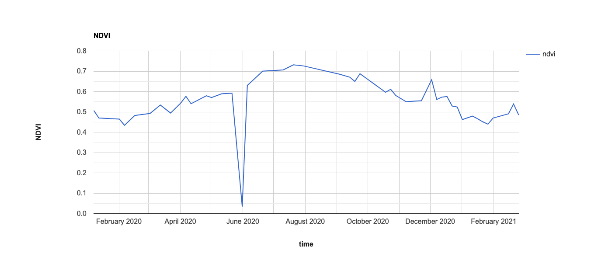
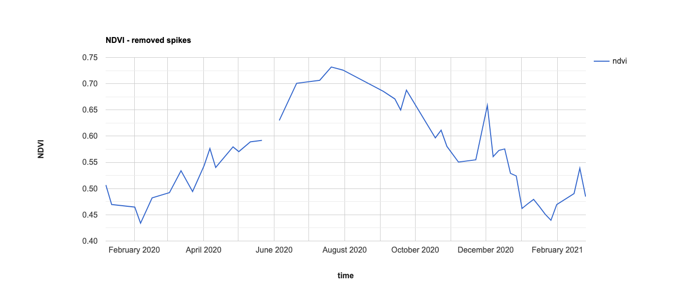
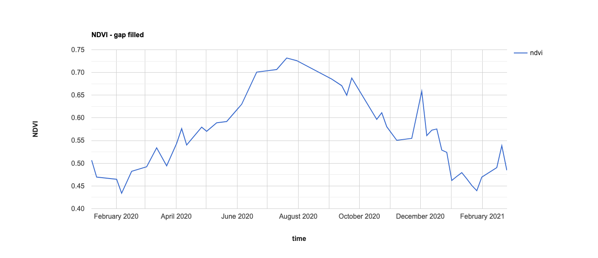
Smoothing
Even after removing anomolous NDVI values and then gap filling the time-series, the NDVI profiles still do not completely represent the smooth continuous greenup and senescence that is characteristic of vegetation growth. Therefore, many phenology workflows use smoothing models to remove the short-run fluctuations in VI values and retain the dominant profile of seasonal vegetation growth. Generally, it is easier to accurately detect key phenological events such as start-of-season and length-of-season from smoothed vegetation index time-series.
A range of different smoothing models exist and have been successfully applied to phenology applications. You can read Atkinson et al’s. (2012) intercomparison of different smoothing approaches. Generally, smoothing is a form of time-series analysis where a model is specified to represent characteristics of the time-series and then fitted using observed time-series values. A key feature of smoothing is the selection of model parameters that determine the degree to which a time-series is smoothed.
There is a trade-off between models that are more or less sensitive to short-run variation in VI time-series. Models that are more sensitive to short-run VI variation might preserve the signal of short-lived phenological events such as flowering, but at the cost of retaining more noise in the time-series.
A simple model of a time-series is representing it as a linear model of time:
\[y_{t} = \beta_{0} + \beta_{1}t + \epsilon_{t}\]
The goal of model fitting is to find estimates of \(\beta_{0}\) and \(\beta_{1}\), \(\hat{\beta_{0}}\) and \(\hat{\beta_{1}}\). You can think of this as fitting a linear regression model to generate an estimate, \(\hat{y_{t}}\), at time \(t\). Here, you would be representing your time-series with a model of a linear trend in NDVI values through time. The blue line in the figure below is a linear model of vegetation growth fitted to the black points which are a time-series of NDVI values.
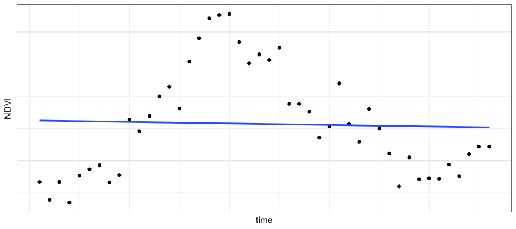
Is a linear model of time (i.e. linear trend model) a good way to represent the profile of vegetation growth in NDVI time-series?
No, vegetation growth has a clear cyclical cycle of greenup, peak greenness, followed by senescence. A linear trend model can only represent vegetation growth as a linear pattern of increasing or decreasing greenness.
Think about specifying a model of a NDVI time-series that accurately reflects vegetation growth patterns. What features of the time-series should the model be able to represent?
- Non-linear increases and decreases in NDVI values.
- The cyclical nature of vegetation growth dynamics.
If you are familiar with sinusoid waves, you might notice similarities between the seasonal profiles of vegetation growth and sine or cosine waves.
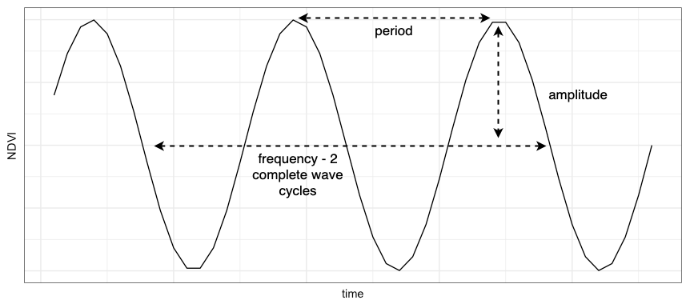
Sinusoidal waves are described by the amplitude, frequency, and phase of the curve. Without needing to go into too much detail, which can be found here and here, sinusoidal waves can be expressed mathematically as a function of their amplitude \(A\), frequency \(f\), and phase \(\phi\):
\[y_{t} = Acos(2\pi{w}t+\phi)\]
Where \(w\) is \(1/f\), which is the number of complete cycles of a sinusoidal wave. This model can be rewritten as:
\[y_{t} = \beta_{0} + \beta_{1}t + \beta_{2}cos(2\pi{w}t) + \beta_{3}sin(2\pi{w}t) + \epsilon_{t}\]
This is just a case of estimating another linear regression model that generates predictions, \(\hat{y_{t}}\), that represent a sinusoidal wave with a frequency, \(f\), that best fits the NDVI values in our time-series. The assumption here is that the best fitting sinusoidal wave accurately captures the signal of smooth continuous vegetation growth and does not capture short-run noise. This is often called a harmonic model of time.
In the Kings Park study area, there is generally one growing season per year. So, we’ll estimate this model with \(w\) set as 1 where a single sinusoidal wave will represent the growing season.
We can use the hants() function in the phenology module to fit this model to NDVI time-series in each pixel and return an ImageCollection with smoothed NDVI values.
Run the following code and compare the fitted and input ndvi values on charts by clicking in the study area. The fitted time-series should be a smooth curve the fits input NDVI values.
// even after gap filling there is noise in the NDVI profiles
// the NDVI profiles do not reflect the smooth and continuous green up and senescence of veg growth
// smooth the gap filled time series with a harmonic model of time
var s2Hants = phenology.hants(s2GapFilled.select(['ndvi']), 1, 'ndvi');
// draw NDVI time series chart at clicked points
var drawChart = function(point) {
var clickedPoint = ee.Geometry.Point(point.lon, point.lat);
var tsChart = phenology.timeSeriesChart(clickedPoint, s2Hants.select(['fitted', 'ndvi']), 'NDVI - smoothed', 'time', 'NDVI', 10, 'system:time_start');
print(tsChart);
};
Map.onClick(drawChart);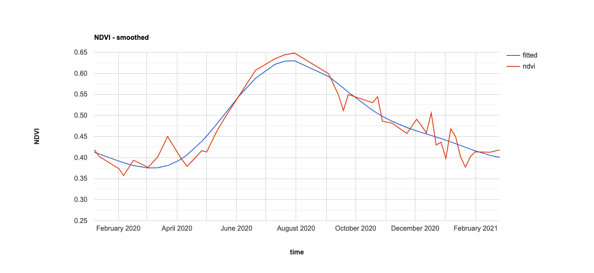
Non-vegetation Mask
To ensure that we are only monitoring the phenology of vegetated land cover, we will mask out non-vegetated areas by flagging pixels with NDVI time-series that do not display clear patterns of vegetation growth.
The approach used here is based rules used in NASA’s Vegetation Index and Phenology (VIP) product to mask out non-vegetated pixels. For a pixel to be classed as having a valid growing season, the:
- maximum growing season NDVI should be greater than a threshold value (NDVI > 0.12 is the NASA VIP default).
- a minimum delta NDVI (maximum NDVI - minimum NDVI) greater than a threshold (\(\Delta\)NDVI > 0.05 is the NASA VIP default).
- there should be a sustained increase in NDVI values for \(n\) days (here we will require there to be at least 40 days of sustained vegetation growth).
Can you explain why these rules are sensible for masking out locations where there is no vegetation growth?
- A maximum growing season NDVI threshold ensures that there is some green vegetation present in a pixel.
- A \(\Delta\)NDVI greater than a thresold ensures the difference between peak greenness and low greenness is larger than small noisy fluctuations in spectral reflectance.
- A sustained increase in NDVI values is a characteristic of vegetation growth dynamics and will distinguish actual vegetation growth for small fluctuations in spectral reflectance that could still occur over non-vegetated pixels.
The checkSeasonsVip function requires four arguments:
- An
ImageCollectionwithImages to check for valid pixels. - The maximum growing season NDVI threshold (here 0.12).
- The \(\Delta\)NDVI threshold (here 0.1).
- The time step, in days, between
Images in theImageCollection(here 5). - The required number of days of a sustained increase in NDVI for a growing season to be valid (here 40).
// check for valid seasons using the NASA VIP rules
// max season NDVI > a threshold (default 0.12)
// minimum season delta NDVI > a threshold (default 0.05)
// sustained increase in VI values for n days
var seasonMask = phenology.checkSeasonsVip(s2Hants.select('fitted'), 0.12, 0.1, 5, 40);We will keep our valid season mask in the variable seasonMask and use it at the end of our workflow to mask maps of phenology metrics such as start-of-season and length-of-season.
Phenology Metrics
From smoothed time-series of NDVI values, we will estimate the following phenology metrics:
- Start-of-season.
- End-of-season.
- Length-of-season.
- Peak greenness.
One approach to estimating start-of-season and end-of-season is using a fixed NDVI threshold. When a sequence of increasing NDVI values exceed the fixed threshold, start-of-season is detected. End-of-season is defined in a similar way, when a sequence of decreasing NDVI values pass the fixed threshold, end-of-season is detected.
What is a potential limitation of using fixed NDVI thresholds for detecting start-of-season and end-of-season?
Different plant species, mixes of plant species in a pixel, or canopy coverage within a pixel will result in different NDVI time-series. Thus, a fixed NDVI threshold that works for one context is unlikely to transfer to different locations.
Similarly, defining thresholds in one growing season might not be suitable for future or historical seasons due to inter-annual climate variation.
To overcome the limitations of using fixed NDVI thresholds to detect phenology metrics, a range of different approaches have been proposed and used. One approach that advances upon fixed NDVI thresholds is to use local (pixel-specific) thresholds applied to a time-series of NDVI values that have been transformed into NDVI ratio values. The NDVI ratio is computed as:
\[NDVI_{ratio} = \frac{NDVI-NDVI_{min}}{NDVI_{max}-NDVI_{min}}\]
NDVI ratio values fall between 0 and 1. A threshold value such as 0.5 (While et al., 2009 ) or 0.3 (Didan et al., 2018) have been used. When increasing NDVI ratio values exceed this threshold, start-of-season is detected. As this threshold is applied to NDVI values transformed into the NDVI ratio, the absolute values of the threshold will vary from pixel to pixel depending on the amplitude of vegetation growth in each pixel’s time-series.
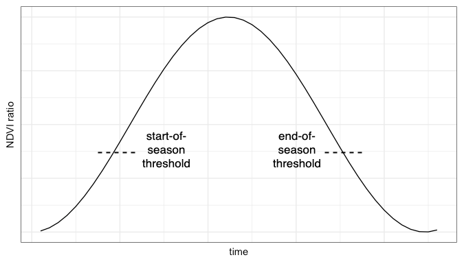
We can use the sosRatioThreshold() function to generate a start-of-season date Image from an ImageCollection of smoothed NDVI values. The eosRatioThreshold() function can be used to generate an end-of-season date Image and the peakVi() function can be used to generate an Image with bands corresponding to peak NDVI and date of peak NDVI.
Run the following code to generate start-of-season, end-of-season, and peak NDVI Images and use the seasonMask to mask pixels where there was no vegetation growing.
// phenology parameters
// start-of-season
var sos = phenology.sosRatioThreshold(s2Hants, ['fitted'], 10, 0.3)
.updateMask(seasonMask);
Map.addLayer(sos.select('day'), {min: 0, max: 150, palette:['440154', '433982', '30678D', '218F8B', '36B677', '8ED542', 'FDE725']}, 'start-of-season');
// end-of-season
var eos = phenology.eosRatioThreshold(s2Hants, ['fitted'], 10, 0.3)
.updateMask(seasonMask);
Map.addLayer(eos.select('day'), {min: 200, max: 350, palette:['440154', '433982', '30678D', '218F8B', '36B677', '8ED542', 'FDE725']}, 'end-of-season', false);
// peak NDVI
var peakVi = phenology.peakVi(s2Hants, ['ndvi'])
.updateMask(seasonMask);
Map.addLayer(peakVi.select('fitted'), {min: 0.6, max: 0.85, palette:['ffffcc', 'd9f0a3', 'addd8e', '78c679', '41ab5d', '238443', '005a32']}, 'peak NDVI', false);
Length-of-season is the difference between end-of-season and start-of-season? You have used Image math operations in Lab 7 where you subtracted one Image from another. Can you use the sos and eos Images to generate a length-of-season Image?
var los = eos.subtract(sos)
.updateMask(seasonMask);
Map.addLayer(los.select('day_from_start'), {min: 200, max: 350, palette:['440154', '433982', '30678D', '218F8B', '36B677', '8ED542', 'FDE725']}, 'length-of-season', false);If you head to the Inspector tab, you can click on the map display and explore Image values at clicked locations. You can toggle the sos, eos, and peakVi layers on and off to see maps of the phenology metrics. You can also compare start-of-season and end-of-season at clicked locations with their NDVI time-series charts which will be generated in the Console.
Phenology and Climate
Now we have extracted phenology metrics from our NDVI time-series, we can use them in analysis and modelling tasks. Common analyses using phenology metrics derived from remote sensing images include assessing drivers of phenology (e.g. how does changes in climate or weather affect the timing of phenology events) or undertaking spatio-temporal trend analysis to characterise how ecosystems are changing over time.
Here, we will undertake a simple analysis to explore the relationship between summer land surface temperatures and start-of-season dates in Kings Park. Several observational studies have detected urban climates affecting the timing of phenological events.
Let’s create an Image of average land surface temperatures from October 2019 to the end of February 2020. Broadly, this period corresponds to just before the start-of-season. We will use the land surface temperature band included in the Landsat 8 surface reflectance product and convert it from Kelvin to Degrees Celsius.
// Climate and phenology relationsips
// apply scaling factors
function maskL8Sr(image) {
// Bit 0 - Fill
// Bit 1 - Dilated Cloud
// Bit 2 - Cirrus
// Bit 3 - Cloud
// Bit 4 - Cloud Shadow
var qaMask = image.select('QA_PIXEL').bitwiseAnd(parseInt('11111', 2)).eq(0);
var saturationMask = image.select('QA_RADSAT').eq(0);
// Apply the scaling factors to the appropriate bands.
var opticalBands = image.select('SR_B.').multiply(0.0000275).add(-0.2);
var thermalBands = image.select('ST_B.*').multiply(0.00341802).add(149.0);
// Replace the original bands with the scaled ones and apply the masks.
return image.addBands(opticalBands, null, true)
.addBands(thermalBands, null, true)
.updateMask(qaMask)
.updateMask(saturationMask);
}
var lst = ee.ImageCollection("LANDSAT/LC08/C02/T1_L2")
.filterDate('2019-10-01', '2020-03-01')
.filterBounds(geometry)
.map(maskL8Sr)
.mean()
.select('ST_B10')
.subtract(273.15)
.rename('surface_temp_C')
.clip(geometry);
Map.addLayer(lst, {min: 30, max: 45, palette:['00FFFF', 'FFFF00', 'FF0000']}, 'LST (C)');You should see a map of land surface temperature for the study area.
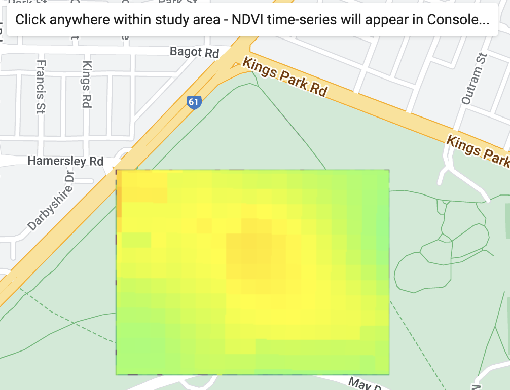
Scatter plots can visualise bivariate relationships between two variables. We will use a scatter plot to explore if there is a relationship between land surface temperature start-of-season in our study area.
First, we need to combine the start-of-season Image with our land surface temperature Image. Let’s add lst as a band to the sos Image. Then, we will sample 300 locations in the study area extracting the land surface temperature and start-of-season values at each location.
var sosLst = sos.addBands(lst);
var sosLstPoints = sosLst.sample({
region: geometry,
scale: 10,
numPixels: 300,
seed: 123,
geometries: true
});
Map.addLayer(sosLstPoints, {}, 'sample points');Finally, let’s generate a scatter plot to see if there is a relationship between land surface temperature and start-of-season.
// print lst v start-of-season chart on the console
// add a linear trendline
var lstSosChart =
ui.Chart.feature
.byFeature({
features: sosLstPoints,
xProperty: 'surface_temp_C',
yProperties: ['day']
})
.setSeriesNames([''])
.setChartType('ScatterChart')
.setOptions({
title: 'LST and start-of-season relationship',
hAxis:
{title: 'Temperature (°C)', titleTextStyle: {italic: false, bold: true}},
vAxis: {
title: 'Start of season',
titleTextStyle: {italic: false, bold: true},
viewWindow: {min: 50, max: 150}
},
pointSize: 10,
trendlines: { 0: {} }
});
print(lstSosChart);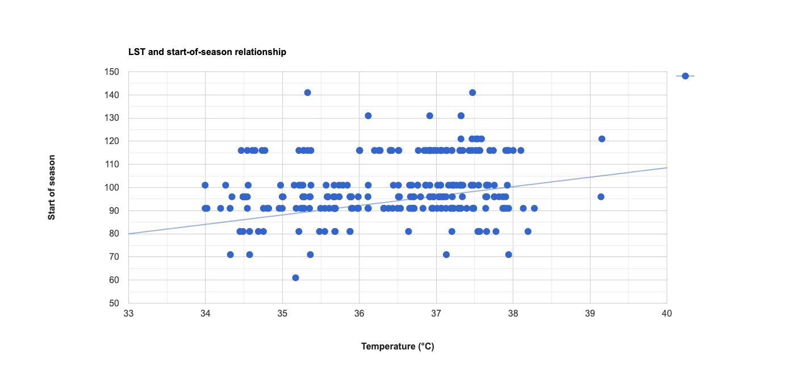
This has just been a quick demo of how to explore relationships between climatic drivers and phenology. If you were going to expand this analysis to complete a more comprehensive analysis of climate-phenology relationships, what would you need to consider?
We should consider the vegetation species present in the case study area, and, if, temperature before the growing season is an important driver of their phenology. Other climatic drivers (e.g. precipitation and moisture availability or insolation) could affect phenology. The analysis could be expanded to incorporate other drivers of phenology to guard against omitted variable bias (e.g. (mis)attributing the effect of precipitation on phenology to surface temperatures); this could be done using multiple regression analysis. There are a few other things to explore such as the mix of vegetation species within a 10 m Sentinel-2 pixel footprint, and, if they’re likely to have similar phenology profiles.